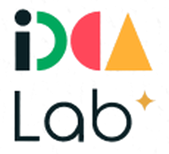
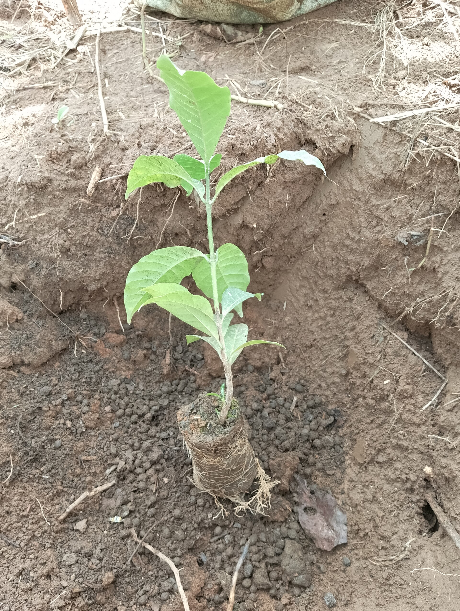

Soutien aux jeunes agri-entrepreneurs

2
Six mois d'accompagnement pour structurer l'offre, tester le marché auprès des producteurs et préparer la levée de fonds, avec des mentors du secteur agricole.
Idea Lab — slide thématique (pro) · exemple fictif · photos et logos réels (voir assets/photos/credits.json, assets/people/credits.json)

